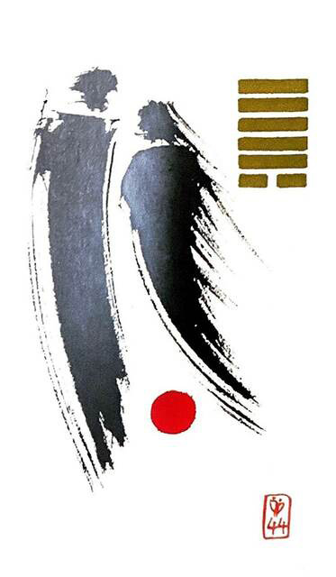

천풍구(만날 구)
평괘 19
(나이트클럽에서 만나~)
바람이 하늘 아래 지상 세계로 불어 만물과 접촉을 하고 지나간다우연히 만난 두 사람이 순간적으로 매료 되어급격히 가까워지는 상황을 표현한 그림(속궁합 매우 좋은 카드)
서로매력에 이끌림.성적 유혹.자기력.연결.결합.성교.성적결합.열정적인 만남.돌발적.충동적.구설.함정
연애운
이성들이 나의 매력에 이끌림.성적 결합이 좋음.애정운 왕성
사업운
사람과의 교류 증가.서비스업 좋음.구설.모함.배신.함정
속마음
썸서로의 매력에 이끌리며 급격히 친해지고 싶은 마음
1년 이상속궁합이 잘맞는다고 생각하는 마음.매력에 이끌리는 마음
이별 후속궁합 때문이라도 재회 하고 싶은 마음
솔로연애운
새로운 이성 생길 확률 높다
건강운
전염병.성병.성생활의 과증으로 몸의 피로